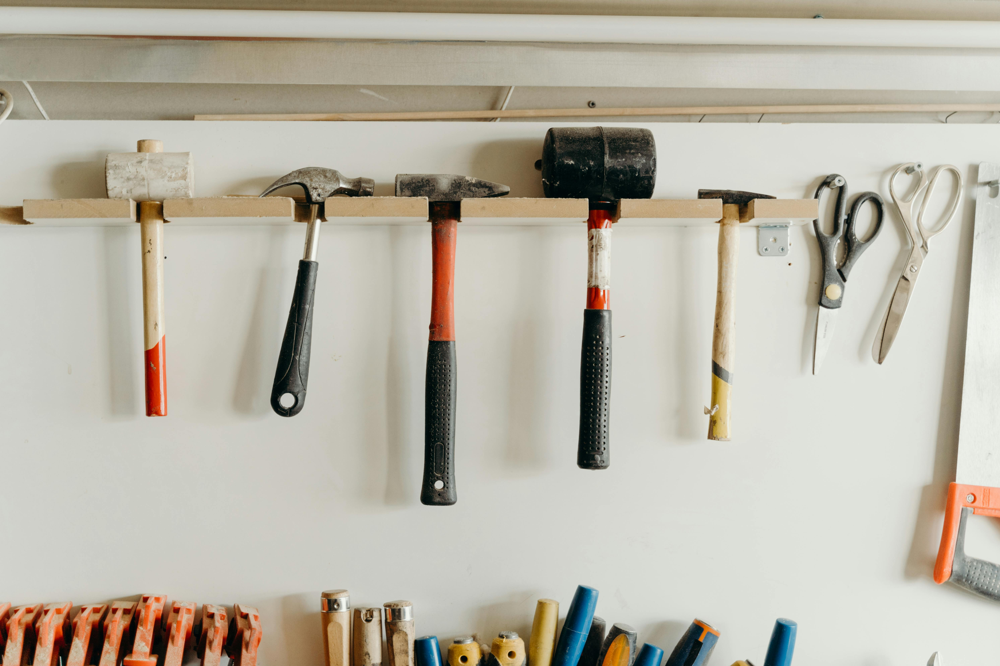

Качествени продукти
Работим с артикули, които отговарят на съвременните изисквания за надеждност и безопасност.
„ТЕХ-КО“ предлага подбрани авточасти и консумативи за различни марки автомобили. При нас ще откриете надеждни продукти, коректно обслужване и достъпни цени.

Фирмата е насочена към клиенти, които търсят качествени резервни части, консумативи и аксесоари за поддръжка на автомобила. Нашата цел е да съчетаем бързо обслужване, коректност и сигурен избор.
Работим с артикули, които отговарят на съвременните изисквания за надеждност и безопасност.
Предлагаме спирачни елементи, филтри, масла, акумулатори, чистачки, крушки и други важни компоненти.
Всеки клиент получава съдействие при избора на правилната част според модела и нуждите на автомобила.

В „ТЕХ-КО“ вярваме, че всяка добре поддържана кола започва с внимателен подбор на авточасти. Затова залагаме на ясна информация, практични решения и удобна навигация в сайта.
Сайтът е създаден така, че посетителят лесно да открива продукти, промоции, информация за продажбите и начин за връзка с фирмата.
Виж актуалната промоция